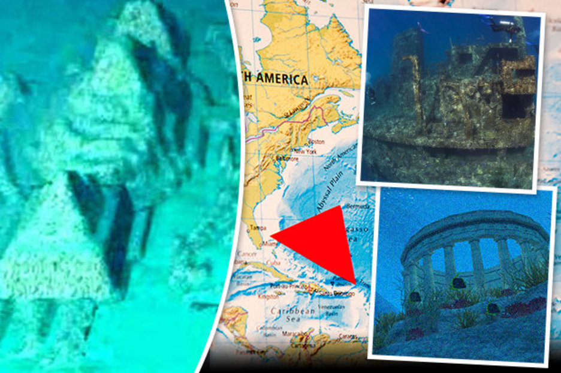

People believe that the cause of the Bermuda Triangle disappearances is because of Atlantis is laying down in the the surrounding area, and the technology they have interferes with our technology and cause planes to crash down. After the plane crashes then they people go into the water, atlanteans help them and they live there.
I believe that after they fall into the water theen the people start living in atlantis with everyone. I also believe that because the government doesn’t want to tell the world about atlantis being a real thing that they make the people who have disappeared stay in down there because they don't feel like telling the world the truth. It's the best thing to do because it could save lots of lives>
